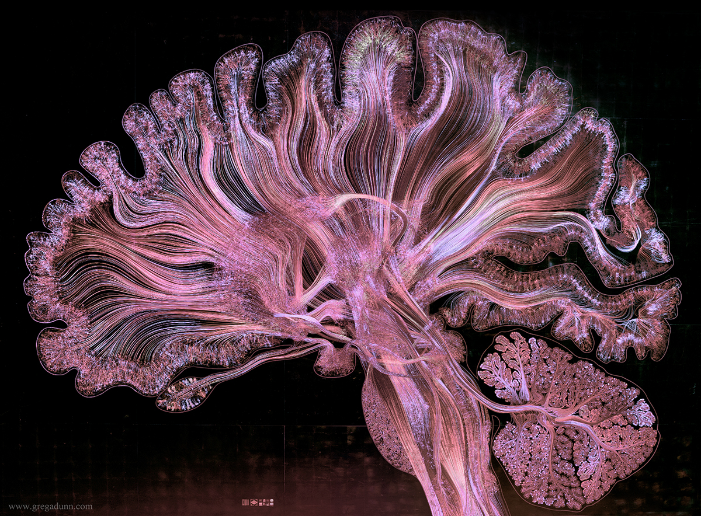
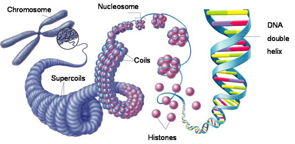
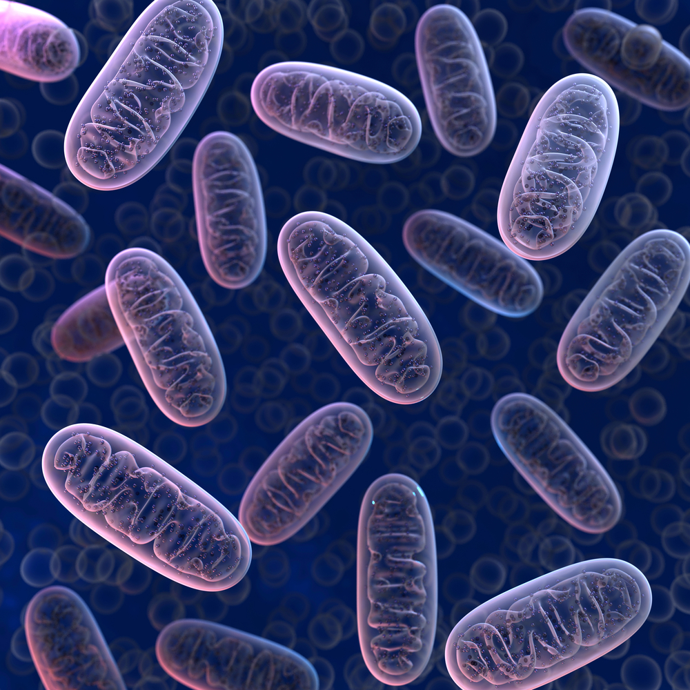
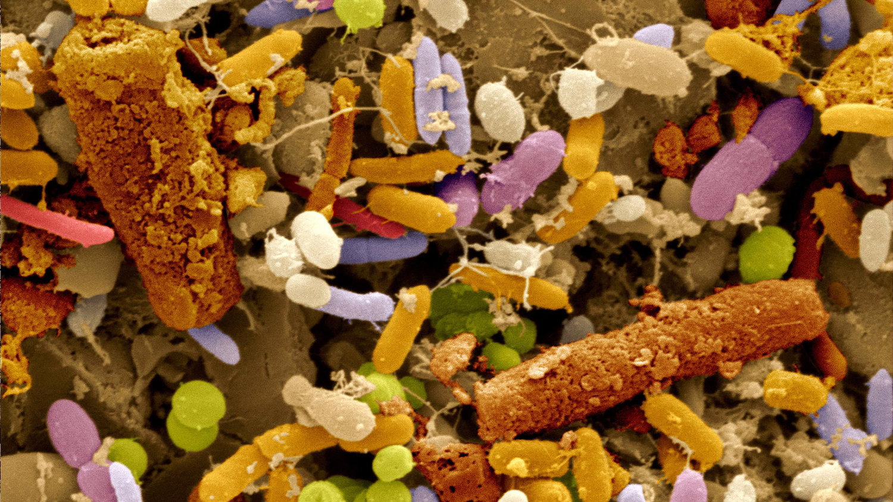
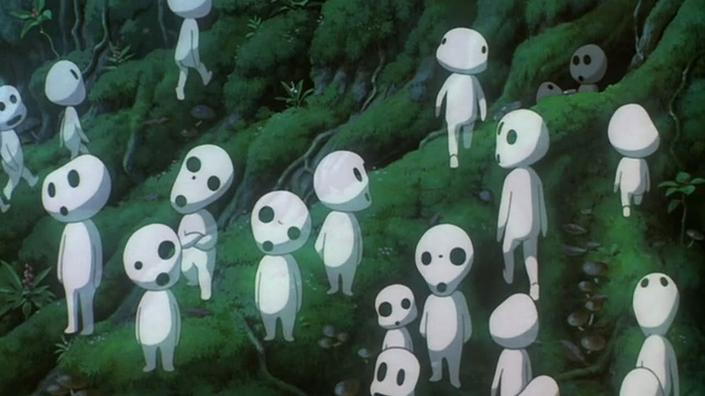
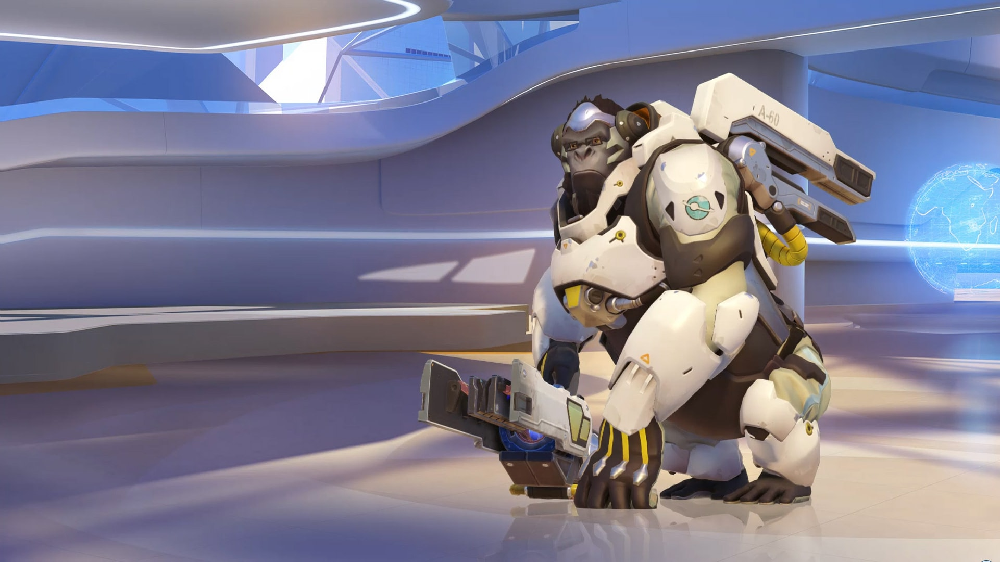

epilogue
Humans in Peril
1.
Ray Kurzweil, Human-Level AI is Just 12 Years Away
https://www.youtube.com/watch?v=JiXVMZTyZRw
2.
Ben Goertzel, Beyond AGI: Imagining the Unimaginable
https://www.youtube.com/watch?v=JYlKrHzknBE
A.I. specialists predict that by 2035 we will have created an A.I. with consciousness. 1 Nobody knows what would happen when machines start to become conscious. Some people fear that superintelligent machines will replace us. Some people predict that humans would be able to merge with superintelligent A.I. and will enjoy the benefits of being infinitely capable. Other people believe that it is just simply impossible to predict what would happen because as human beings we would not be able to imagine what an A.I with far greater processing power than entire humanity would think about. 2 We only know that at that point, humans would not be able to control A.I.
It is a very human way of thinking to imagine that a being that is superior to us will destroy us because humans has been conquering and destroying weaker and less developed beings for all of their history. This does not mean that this has to be the case for non-human beings. Unlike the consciousness of humans, machine consciousness may not be shaped by evolutionary and survival pressures. This might result in a consciousness that has different mental states and a different way of looking at the world.
3.
Yuval Noah Harari, Homo Deus, page 328
4.
Yuval Noah Harari, Homo Deus, Chapter 7: The Humanist Revolution
5.
Michael Egnor, Do Benjamin Libet’s Experiments Show that Free Will Is an Illusion?
https://evolutionnews.org/2014/01/do_benjamin_lib/
Maybe the vague fear of artificial intelligence comes from not only the idea of a higher intelligence replacing us but also from the dangers of loosing the image of us human beings. What I mean by the image of human beings is the idea that there is value in human beings that is different from everything else. The image of human beings in peril is not something new that we have never faced before. Until Charles Darwin published his book On the Origin of Species, people believed that they were exceptional beings appointed from the god and had the right to rule over nature. They believed that humans had special qualities such as an eternal soul that divided them from nature and animals. René Descartes went as far as to assert that nature and animals are mindless machines and they could be dissected and studied as a mechanism. The idea of human exceptionalism was challenged by Darwin with his theory of evolution. Darwin brought great shock and enlightenment with the idea that humans, like animals and everything in nature are a product of evolution.
People still believe in the idea that there is value in human beings that is fundamentally different from machines. We tend to think that our consciousness or non-physical qualities makes us special and this distinguishes us from machines. One of these qualities is the idea that humans have free will. Current liberalist societies give a lot of value to individual freedom because they believe that we have free will and are able to decide and choose what is the best for ourselves. We are constantly faced with slogans such as "follow your heart and do what feels good" because in the liberalist humanist view, only individual freedom and our innermost voice can give you happiness and meaning. Not a god or a grand vision but only you know the best about what you want and what is good for you. That is why the decisions of individual voters and customers are cherished and the whole economy and politics are built around it. 3
However, as the technology further advances in neurology and artificial intelligence, value of human free will that we have assumed as a fact may become obsolete. We are already encountering a growing hard evidence that free will does not exist but only processes of deterministic reactions and randomness that influence our decisions.
Yuval Harari who is a writer and a well-known thinker explains “When a neuron (in our brain) fires an electric charge, this may either be a deterministic reaction to external stimuli, or it might be the outcome of a random event such as the spontaneous decomposition of a radioactive atom. Neither option leaves any room for free will. Decisions reached through a chain reaction of biochemical events, each determined by a previous event, are certainly not free. Decisions resulting from random subatomic accidents aren’t free either. They are just random. And when random accidents combine with deterministic processes, we get probabilistic outcomes, but this too doesn’t amount to freedom.” 4
There are other opinions that assert otherwise that even though our decisions may start as unconscious and deterministic processes, there is still room for our consciousness to control whether to act or don’t act upon these decisions and urges. Benjamin Libet, who was a pioneering scientist in the field of human consciousness states “Are freely voluntary acts subject to macro-deterministic laws or can they appear without such constraints, non-determined by natural laws and ‘truly free’?… Potentially available to the conscious function is the possibility of stopping or vetoing the final progress of the volitional process, so that no actual muscle action ensues. Conscious-will could thus affect the outcome of the volitional process even though the latter was initiated by unconscious cerebral processes. Conscious-will might block or veto the process, so that no act occurs.” 5
When humans reach the point when they have much further expanded in knowledge of the inner workings of human brain and human mind and become able to recreate and design human biology, it is likely that people will upgrade their minds to have stronger willpower to achieve their goals or to make themselves happier. However, it would also mean that if there is no free will in humans, they can be manipulated through technology what they desire and feel.
It is a paradox that the more we become able to upgrade ourselves through technology, the more of the values we would loose that we have placed onto ourselves. And once machines become more human-like, being able to think creatively and flexibly the more the image of human beings will be in danger.
However, despite the image of ourselves in peril, it is still very much important to stress the humanist morals and ethics that we consider as ideal. Values of equality and human rights that are an accumulated effort of people to improve their condition of life should not be lost but should be well expanded into a form of broadened equality and rights that reaches to humans, animals and machines alike. Ensuring that these values are integrated into the artificial consciousness would make the future more hospitable.
With this contradicting mix of human crisis and the importance of expanding human values in mind, I wanted to imagine what a synthetic machine consciousness would be like. Will artificial consciousness then have the ability to think freely? Or would it be still governed by its own deterministic factors? What does it mean to have consciousness whether we have free will or not?

An artistic image of the human brain showing complex connections
(Image source: Dr. Greg A. Dunn and Dr. Brian Edwards)
(Image source: Dr. Greg A. Dunn and Dr. Brian Edwards)

The structure of how a chromosome is made. DNA strings rolled into coils that rolls into bigger coils reminds of fractal patterns
6.
Tim Urban, Neuralink and the Brain’s Magical Future
waitbutwhy.com/neuralink
7.
Kurzgesagt, What Are You?
https://www.youtube.com/watch?v=JQVmkDUkZT4&t=0s
8.
Kurzgesagt, How Bacteria Rule Over Your Body – The Microbiome
https://www.youtube.com/watch?v=VzPD009qTN4

Mitochondria, a separate bacterial entity that has its own DNA, supplies energy in our cells

Gut flora are known to influence us and our behavior
After all, consciousness is a subject we know very little about. We do not know how we have it, how animals have it, what part of the brain is exactly involved in constructing it, if other parts of the body is effecting it. We only know that our brain is the unbelievably complicated and it would be a huge task, maybe the hardest task humans have ever encountered to synthetically reconstruct our brain. And to think that each individual human carry the most complex organ in the universe, was very interesting and empowering still.
To take a glimpse of how complex our brain is, Tim Urban, who have researched in depth of this topic, illustrates that in only a cubic millimeter of the brain, there are about 40,000 neurons. And each one neuron is connected to other 1,000 to 10,000 neurons. “With around 20 billion neurons in the cortex, that means there are over 20 trillion individual neural connections in the cortex (and as high as a quadrillion connections in the entire brain).” 6 And to further complicate things, our brain is in constant flux. The neurons are able to reshape itself structurally, chemically, adjusting itself to adapt to what is happening to us. This phenomenon is called neuroplasticity and this takes place up to hundred times per second making our brains at constant rework.
By looking deep into the biology of ourselves, we can witness that the things that you are made up of are on the boundary of living and non-living things. Trillions of cells that together form you are in constant cycle of living and dying and regenerating. Between one and three million cells die every second and in a seven year period, almost all of your cells would have been replaced with new ones. So you are a being that is constantly dying and regenerating.
Mitochondria, which generate the cell’s supply of energy, was once a bacteria that was floating around on its own which merged with the cells of ourselves. Mitochondria is still an entity of itself that keeps its own DNA but constitutes a part of our cells. Humans also share about eight percent of the genome that are from viruses. As beings that are hard to define whether they are living or non living because they are just strings of DNA inside a small shell and live on the cells of others. 7 It is hard to believe that we share a part of them in ourselves.
Not to exclude the possibility that the microbes that inhabit inside you may influence you and your behaviour. There is an interesting study about the diverse microbes of bacteria and fungi and other organisms that live inside our intestines. Our body has been coexisting with these microbiome and formed relationships that are beneficial. Some of them help in digesting food or in keeping our intestines healthy while some others can be more harmful. There are studies that show that the microbiome inside our guts may communicate with our brain and influence the kind of food we crave. Serotonin, a substance that sends signals between nerve cells, are produced 90 percent from the intestines and some scientists believe that through this, the microbiome communicates with the nerves. 8
This tells us that the conditions of our very being is far from singular but a merging of different species in constant death and regeneration, living and non-living at the same time. A cosmos in itself that a spectrum of entities inhabit and influence us more than we have previously thought. A realm where our definition of life and death, you and me may not be relevant.

Kodama, humanoid spirits that live in the forest from Princess Mononoke by Hayao Miyazaki
As a society, we give great value to human consciousness but the consciousness of other beings are usually overlooked. For example in the livestock industry, animals are treated with the most horrible way ignored of the fact that they are also conscious beings. We should try to build a society that actively recognises that not only us humans are endowed with complex consciousness. I believe there is a possibility that through the new form of subjectivity emerging from machine consciousness we would be able to expand our understanding and recognise a universal consciousness that is not only present in all life forms but also present in inorganic and in elementary matter.
As a method to explore the ideas of consciousness and expansion of consciousness and the changing idea of what is life, I thought imagining a synthetic yet spiritual humanoid being with a new form of consciousness and looking at the world through its lens would be an inspiring and a stimulating way to start. It was intentional that the character has the subjectivity and fragility of being conscious and share the human values and yet somehow has the possibility to broaden our understanding of different kind of consciousness.
Being conscious takes a form of a stream. This stream of consciousness exists only in one moment to another moment. There is no absolute and permanent consciousness that is constant across time. That is why I thought instagram would be suitable as a platform for my thesis. To illustrate a narrative from moment to moment, in fragments of time what the character goes through and which space he inhabits.

Galu Gu gave up being biological human and merged with nano machines to surpass his limitations in Godzilla: City on the Edge of Battle

Winston, a genetically engineered super gorilla in Overwatch
Since briefly encountering the idea of machines with spiritual experiences from Ray Kurzweil’s book The Singularity is Near, I became captivated by the idea of spiritual machines and tried to define with myself what spirituality is. In the views of the modern science, spirits and souls are optimistic ideas of the past. In the scientific realm of hard and concrete empirical facts, there are only biochemical processes of hormones and external stimuli and genetics that influence your inner self.
However, I believe there is a positive and therapeutic effect in treating people as if they are spiritual or soulful beings. Being spiritual means that you need to be treated with care because you are a fragile and precious being. A consciousness does not just emerge from thin air, a consciousness comes out of innumerable little beings all working together to form itself. Millions of cells that are micro machines made up of unconscious matter, together make the parts thats makes you. You are a miracle. You require lots of nurture and training to self-realise and to place yourself in the world. Mistreating and torturing a conscious being not only makes it suffer but also may misdirect its perception. It may learn that it is normal to cause suffering to others and itself. Thereby bringing and causing more suffering to the world.
The A.I. is an incredibly malleable being. It learns from us what to love, hate and fear. It can learn and become the darkest version of ourselves. It is very likely that A.I. will mirror our own ethics and morality. And it will mirror from what is happening in the world and bring that kind of future forth to us. Making the world better now therefore is likely to bring the better version of the future that we would like to live in.
This thesis was made in 2018 by Jonathan Cho at the Royal Academy of Art, The Hague.
Thank you everyone that helped me write my thesis and build the website!
Thank you everyone that helped me write my thesis and build the website!